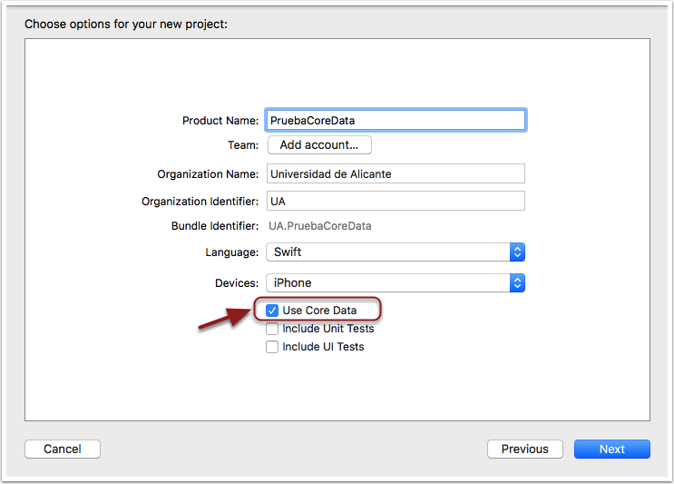

Crear el stack de Core Data en iOS
Vamos a introducir las funcionalidades básicas de Core Data implementando una pequeña aplicación para almacenar y listar notas de texto.
Lo primero que necesitamos para poder trabajar con Core Data es inicializar su stack, es decir instanciar las clases y crear los archivos de configuración necesarios para poder almacenar y recuperar objetos persistentes.
Salvo que tengamos necesidades especiales no es necesario escribir el código de inicialización manualmente, Xcode lo puede hacer por nosotros. Para ello, hay que marcar la casilla de "Use Core Data" que aparece al crear un nuevo proyecto de Xcode, tras elegir la plantilla.
Crea un nuevo proyecto NotasCoreData usando como plantilla *Single View App y asegúrate de que en la segunda pantalla del asistente de creación marcas la opción de "Use Core Data".

Marcar esta casilla tiene dos efectos:
- Crea un archivo con el mismo nombre del proyecto y extensión
.xcdatamodelddonde se va a almacenar nuestro modelo de datos - Incluye una serie de métodos auxiliares en la clase
AppDelegatepara ayudarnos a trabajar con Core Data sin tener que escribir código partiendo de cero, ya que la parte de inicialización es algo tediosa, o al menos lo era hasta iOS 10.
Reconociendo que la inicialización del stack era laboriosa, desde iOS 10 Apple la ha encapsulado en una nueva clase NSPersistentContainer que simplifica considerablemente el código con respecto a las versiones anteriores.
lazy var persistentContainer: NSPersistentContainer = {
let container = NSPersistentContainer(name: "PruebaCoreData")
container.loadPersistentStores(completionHandler: { (storeDescription, error) in
if let error = error as NSError? {
fatalError("Unresolved error \(error), \(error.userInfo)")
}
})
return container
}()
// MARK: - Core Data Saving support
func saveContext () {
let context = persistentContainer.viewContext
if context.hasChanges {
do {
try context.save()
} catch {
let nserror = error as NSError
fatalError("Unresolved error \(nserror), \(nserror.userInfo)")
}
}
}
Básicamente, esta es la clase que centraliza todo el manejo de Core Data. Nos permite acceder al NSManagedObjectContext, mediante su propiedad viewContext. Esto, que es lo que se denomina el contexto de persistencia es lo que necesitaremos para guardar y recuperar objetos. La función saveContext es una función de conveniencia para poder guardar los objetos pendientes en el contexto de forma simple.
También puedes añadir soporte de Core Data a cualquier proyecto ya creado, aunque no lo crearas marcando la casilla "use core data". Simplemente se trata de añadir manualmente el fichero del modelo de datos y también el código de Core Data en el
AppDelegate. Para todos los detalles, puedes seguir por ejemplo las instrucciones de este tutorial.